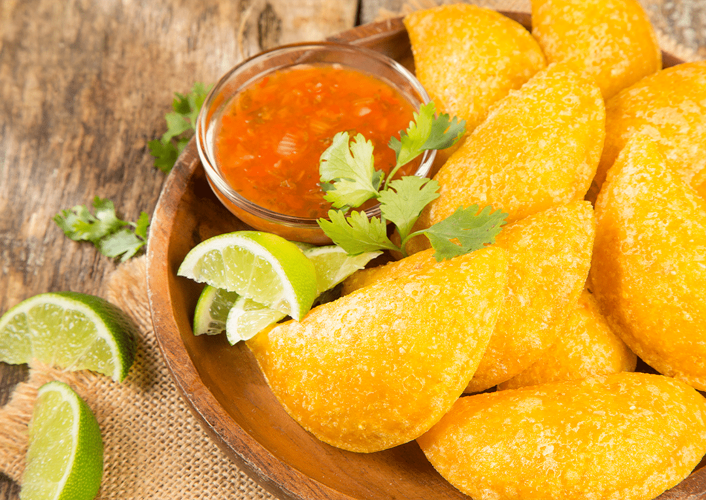
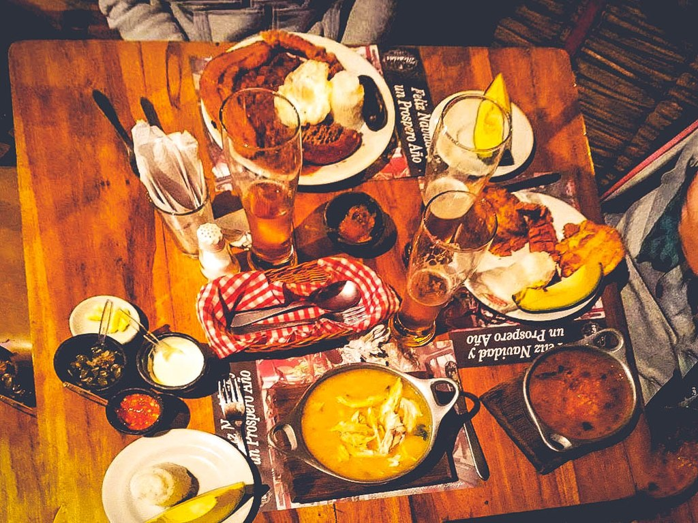
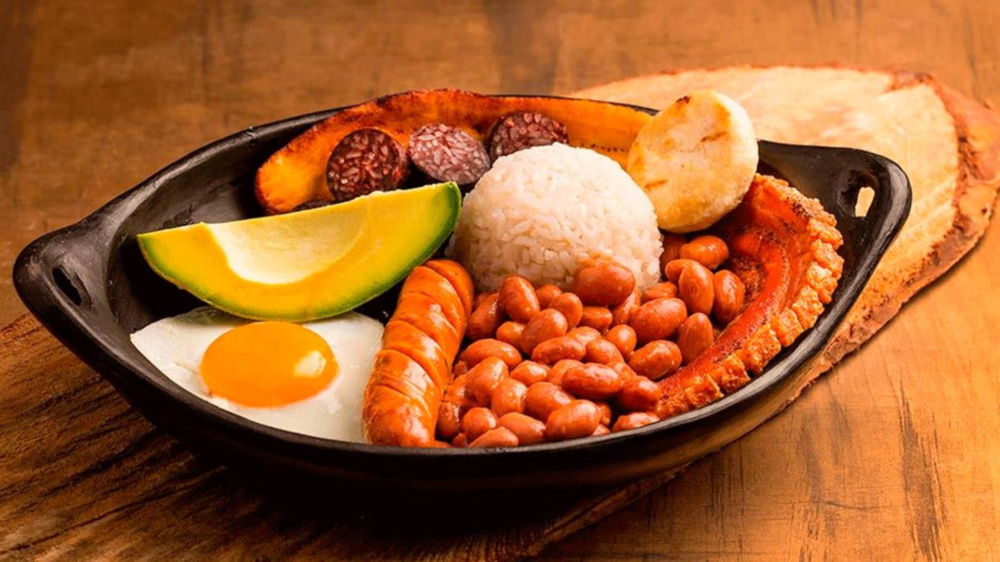

GASTRONOMIA COLOMBIANA
La gastronomía de Colombia es el resultado de la fusión de alimentos, prácticas y tradiciones culinarias de las culturas indoamericanas locales, europeas (principalmente española) y africana. Aunque no hay consenso en cuanto a un único plato que represente a toda la gastronomía colombiana, se destacan la arepa y el sancocho como los más representativos. Otros platos regionales destacados son la bandeja paisa típica de la región Antioqueña, el ajiaco santafereño, la lechona tolimense y huilense y el mote de queso costeño, entre otros.

De la diversidad de fauna y flora en Colombia surge una variada gastronomía esencialmente criolla, con poca influencia de cocinas extranjeras. Los platillos colombianos varían en preparación e ingredientes por región e incorporan las tradiciones de las culturas española, mestiza y negra. Algunos de los ingredientes más comunes en las preparaciones son cereales como el arroz y el maíz, tubérculos como la papa y la yuca, variedades de leguminosas (fríjoles), carnes como la vacuna, gallina, cerdo, cabra, cuy y otros animales silvestres, pescados y mariscos. Es importante también la variedad de frutas tropicales como el mango, el banano, la papaya, la guayaba, el lulo y la maracuyá.
Colombia tiene un plato regional, pero no uno de carácter nacional, aunque son muy reconocidos el sancocho y la arepa en sus distintas variantes. Entre los platos regionales más representativos se encuentran el ajiaco santafereño, la bandeja paisa, el mote de queso, la lechona tolimense, la mamona o ternera a la llanera, el mute santandereano, el tamal y los pescados, sobre todo en las regiones costeras.
CONOCE MAS
Quien vive o visita a Colombia, no solo disfruta de la variedad de eventos culturales, deportivos y de los innumerables sitios y destinos turísticos con los que cuenta este hermoso país, si no, que puede disfrutar de los más variados y deliciosos platos típicos de la gastronomía de nuestro país.
La gastronomía y comida colombiana se puede definir como una combinación o fusión de otras culturas como la española y la africana principalmente, complementada con los platos típicos mas representativos de cada región que le imponen un toque mágico de sabor y sazón inigualables.

Platos típicos colombianos como la bandeja paisa, el sancocho, el mote de queso costeño, la arepa, el mute santandereano, ajiaco santafereño, carne a la llanera o mamona, tamales, la lechona tolimense entre muchos otros manjares gastronómicos de Colombia que deleitarán tu paladar.
Te dejamos una recopilación de los platos y comidas más típicas y populares que puedes disfrutar en nuestra hermosa Colombia